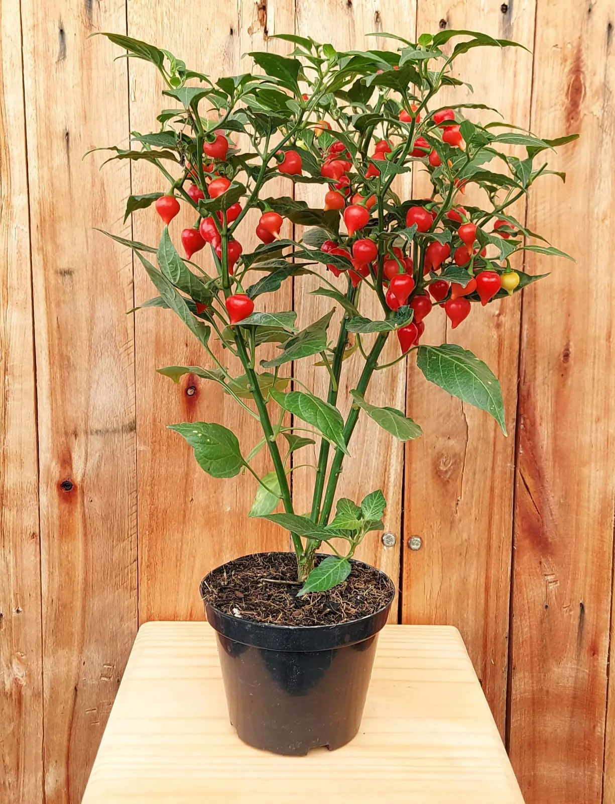

Pimenta Biquinho se diferencia das demais devido a características como formato, cor e ausência de pungência. Atualmente o seu uso é limitado basicamente na ornamentação de pratos, sendo deixado de lado os inúmeros benefícios existentes. O trabalho teve como objetivo elaborar um revestimento comestível com diferentes concentrações de extrato da pimenta Biquinho para auxiliar na conservação de goiabas. Os extratos foram obtidos seguindo o método de extração alcoólica, incorporados no revestimento comestível elaborado, os mesmos foram aplicados por imersão nas furtas para proceder as análises.Os frutos em que houve a aplicação do revestimento, apresentaram grande eficiência em sua conservação, principalmente sob ação de bolores e leveduras. Os resultados físico-químicos das goiabas foram satisfatórios, principalmente quanto aos teores de vitamina C, cuja aplicação do revestimento reduziu a degradação deste componente durante o período de análise. A comprovação efetiva da ação antifúngica do revestimento elaborado foi alcançada, assim como esperada em estudo prévios, podendo ser aplicada em goiabas e tendo retardamento no processo de senescência.
